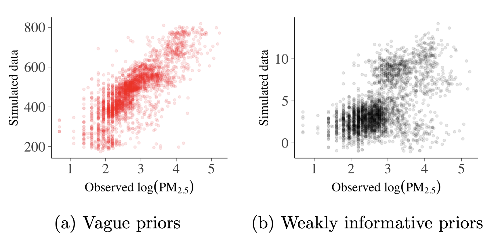
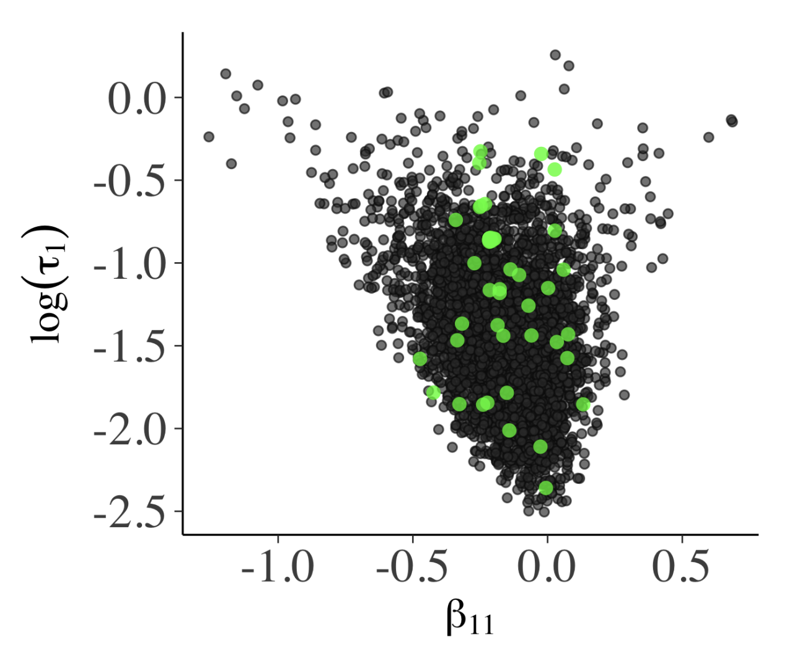
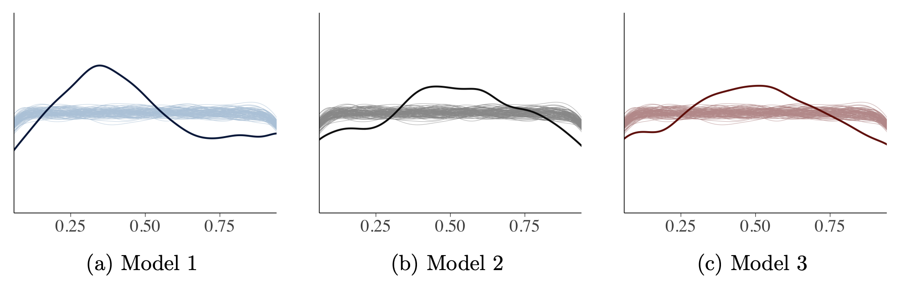
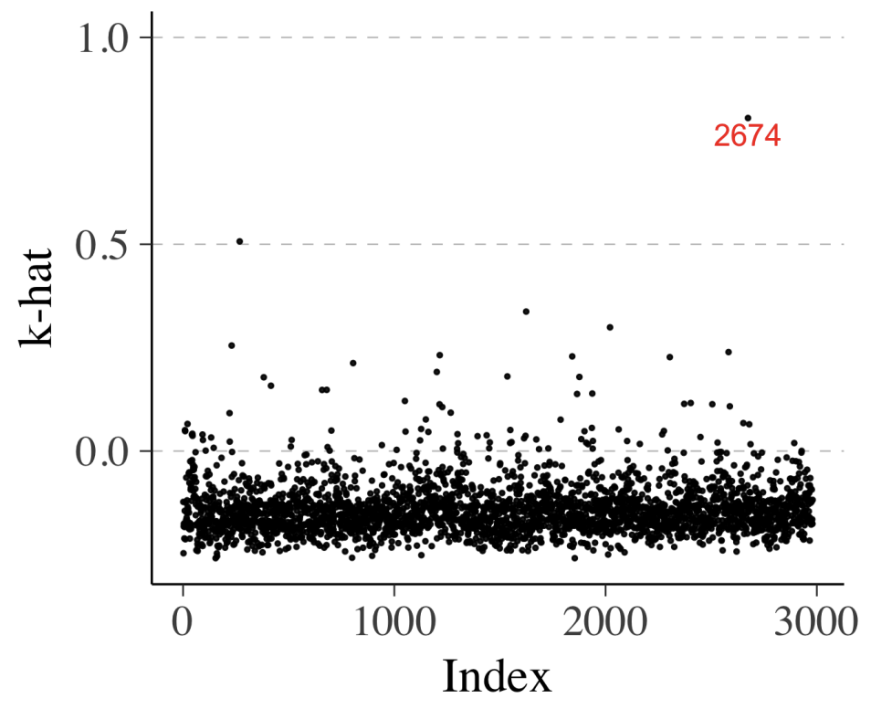

- Paper: Visualization in Bayesian workflow
- Presenter: Hongsup
- Attendees: Kate, Saina
Why this paper?
This paper summarizes types of data visualization that we can use in Bayesian modeling and inference. This is also a good overview of how to do Bayesian modeling properly, including validating results. The fact that the main author is one of the maintainers of the stan package, is another motivating factor.
Paper summary
Given a problem, we incorporate our scientific knowledge into a causal (generative) model to simulate how the relevant variables are produced (input and output). Researchers need more than null hypothesis because it doesn’t talk about how your observation is generated. We can use a DAG as a scientific causal model and data generation process can be expressed in a generative model, which is often accompanied with Bayesian data analysis (BDA). BDA is particularly useful because we can simulate data from the model directly to design and debug during inference. To effectively estimate a posterior distribution, we need computational methods such as MCMC and others. One may say Bayesian might be an overkill but it’s extremeley useful for typical modeling problems such as measurement error, missing data, latent variables, and regularization. Again, it’s also generative!
The paper uses data visualization to express the followings: - Exploratory data analysis to come up with a proper model - Prior predictive distribution check to check model’s assumption - MCMC computational check to evaluate the sampling process - Posterior predictive check to validate inference process
This paper is based on R’s bayesplot but there are several python equivalents to this such as pymc, arviz, and numpyro. It uses a global air polllution dataset (pm2.5 particles) measured from satellite images. The goal of modeling is to predict the level of pm2.5 from the images. Hence, this is a regression problem. Fig. 1 shows the linear trend between the two variables of interest but also shows how sparse the data is depending on groups.
Exploratory data analysis (EDA)
EDA is essential to understand and capture features and heterogeneity of data. The data pattern helps building a group-up modeling strategy to address the imbalance and sparsity of data. The authors emphasize that the top-down approach in typical ML communities these days is to throw everything into a non-parametric procedure, which can severely overfit. Fig. 2 shows that simple regression works pretty well, especially when the group identity is taken into account, which means we need a hierarchical approach.

Prior predictive check
Instead of using a non-informative or uniform prior, weakly informative prior is always recommended, which takes into account modeler’s perspective. In the paper, we assume that the target varialbe follows a normal distribution defined by a mean and a \(\sigma\) where the mean is a linear function of input variable (satellite data) and linear coefficients, which also have priors (0 mean and std (\(\tau\))).
Prior predictive checks are useful to visualize the impact of our assumption for prior definition. If we use a vague prior (very wide range, Fig. 4a), ranges from the sample don’t match the observation. Fig. 4b shows a much tighter prior where the simulated data points still overestimate but are in a much reasonable range. Obviously, tighter and sensible priors are better.

MCMC diagnostics
Success of Hamiltonion Monte Carlo (HMC) depends on how smooth the posterior distribution is; if not smooth, HMC proposal diverges from the true trajectory, which may signal that the trajectories are stuck. Healthy MCMC samples, shown as a bivariate plot in Fig. 5a, shouldn’t have obvious patterns. The funnel shape there is due to \(\beta_{11} \sim N(0, \, \tau_{1}^{2})\) where small \(\tau_{1}\) means \(\beta_{11}\) distribution is narrow. The parallel co-ordinate plot (Fig. 5b) also shouldn’t have any particular structure.

Posterior predictive check
If a trained model has a good fit, generated data from the model should follow observations. Posterior predictive checking is mostly qualitative but it’s effective to compare empirical and simulated values (Fig. 6). Fig. 7 shows checking whether samples from models captures other statistics such as skewness (kurtosis) and Fig. 8 shows how we can evaluate whether samples from models capture summary statistics such as median Fig. 9 shows using visualization that checks whether leave-one-out cross-validation (LOO-CV) predictive cumulative density function is uniform or not, similar to the idea of a K-S test.

Model comparison
When comparing models, Bayesian data analysis allows detailed examination of individual data points on a given model. We can use cross-validated LOO predictive distribution to do so; it shows the distribution of a data point from a model that’s built without that data point (i.e., LOO). We can use expected log-predictive densities (ELPD), which is essentially the mean of the log probability of each data point i, computed with posterior that omits the point i (the bigger the better). We use Pareto-smoothed importance sampling (PSIS) to compute this metric (we don’t have to fit the models N times). Once we have ELPD value for every data point of a model, we can repeat this for all the models we have and make comparison (Fig. 10a).

Similarly, we can compute \(\hat{k}\) as well which represents degree of influence of a specific observation. High value means this data point is “unexpected”, meaning that it is likely to be an outlier or the model struggles to make valid prediction for this data point.
Discussion
We had a lengthy discussion about the choice of prior and how tricky it can be. As the authors mentioned in conclusion, we were also slightly worried about double-dipping the data when running prior predictive checks and potential data leakage. It was also interesting to share our own experience on Bayesian inference ranging from dealing with prior assumptions, model comparison, to decision-making with uncertainty. But we all agreed that Bayesian data analysis is more empowering for us modellers compared to the typical top-down approach in ML where we often don’t have any generative models about data. We also agreed that Bayesian data anlsysis is absolutely more powerful when we suffer from a small data problem.
But we also some downsides of Bayesian data analysis too. It’s difficult to scalable and someone we ML practitioners are not the domain experts and without the domain expertise, it’s difficult to come up with a good DAG. Due to the nature of Bayesian analysis where we don’t often make a point-estimate summary, we appreciated that the paper spent a good amount of time discussing how to summarize a posterior distribution. We also discussed the importance of loss function when decision making with uncertainty.
In general, we liked the paper but we thought it fell slightly short because it wasn’t focusing on understanding scientific mechanism but rather on predictive modeling nature of Bayesian analysis. When it comes to model comparison particularly, we thought it’s important to evaluate the structure of the model too in addition to evaluating the goodness of fit. For instance, if the model performance varies across the regions, the way we compare the models would like to change as well, and potentially the DAGs too.
If you found this post useful, you can cite it as:
@article{
austinmljc-2023-bayesian-visualization,
author = {Hongsup Shin},
title = {Visualization in Bayesian workflow},
year = {2023},
month = {03},
day = {29},
howpublished = {url{https://austinmljournalclub.github.io}},
journal = {Austin ML Journal Club},
url = {https://austinmljournalclub.github.io/posts/20230329/},
}